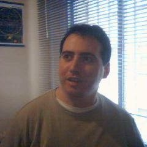
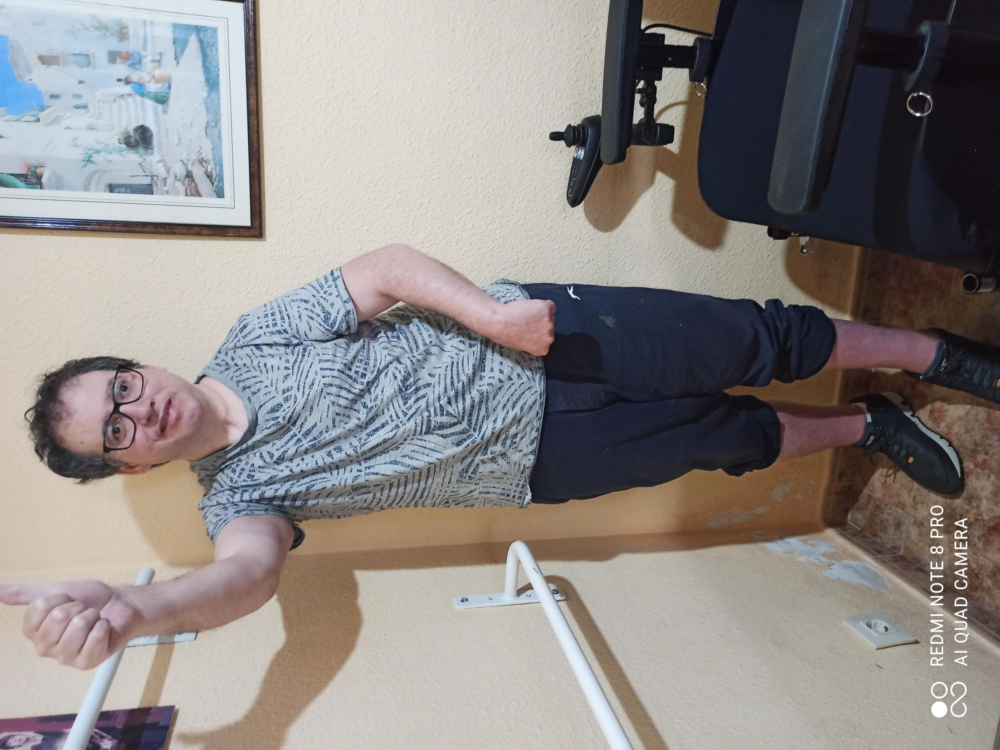

Una historia de resistencia
Seguir avanzando, un día más.
He tenido que superar muchos obstáculos. Algunos se ven; otros solo los conoce quien los ha vivido. Esta es la historia de aprender a volver a empezar.
Conocer el caminoUna vida en movimiento 01 / 08

OIP_1.aviVídeo principal de la historia
No se trata de llegar rápido. Se trata de no dejar de caminar.
01 — El camino
Hay batallas que cambian la forma de mirar el mundo.
Durante mucho tiempo, cada gesto cotidiano fue un reto. Hubo hospitales, incertidumbre, días lentos y sueños que parecían demasiado lejos.
Pero también hubo personas, paciencia y una voluntad que se entrena como un músculo. Cada pequeño paso cuenta cuando has tenido que reconstruir el camino.
02 — Momentos
Pequeñas victorias,
grandes pasos.
Una colección de instantes reales que hablan de esfuerzo, adaptación y esperanza.
No hay paso pequeño cuando el camino ha sido difícil.— Rafa

03 — En primera persona
Verlo es entenderlo.
El relato también vive en la voz, en los silencios y en la manera de afrontar cada día.
Cómo es un día normal con daño cerebral adquirido
La realidad de lo cotidiano
Mi paso por el segundo hospital
Cuando toca volver a empezar
No comprendía nada y sueños inalcanzables
Nombrar lo que dolía
Comienzo de una nueva vida
La esperanza también se practica
La lucha
Si quieres conseguir algo, empieza a pelear
Rehabilitación y escritura
Así soy yo
Rehabilitación
Caminando entre dinosaurios
En Téxum
Entrevista con Mara
Recordando
Un amigo del tenis; Narciso
El capitán
Persona encantadora,el capitán de mi época tenística.
No solo me enseñó tenis
Así era yo
No comprendía nada
Era muy dificíl
Seguía sin comprender, quería pero no podía
Tengo daño cerebral adquirido3
Rafa
 La palabra también acompaña
La palabra también acompaña04 — La escritura
Cuando la vida cambia, también cambian las palabras.
Escribir es otra forma de avanzar: ordenar lo vivido, compartirlo y abrir una ventana para que alguien más se sienta acompañado. En las páginas de mis libros, convierto la experiencia en memoria y la memoria en posibilidad al alcance de quien quiera.
Visitar Ediciones Rafa FernándezRF
Gracias por estar aquí
El camino continúa.
Cada día trae una oportunidad para volver a intentarlo.
Volver al principio